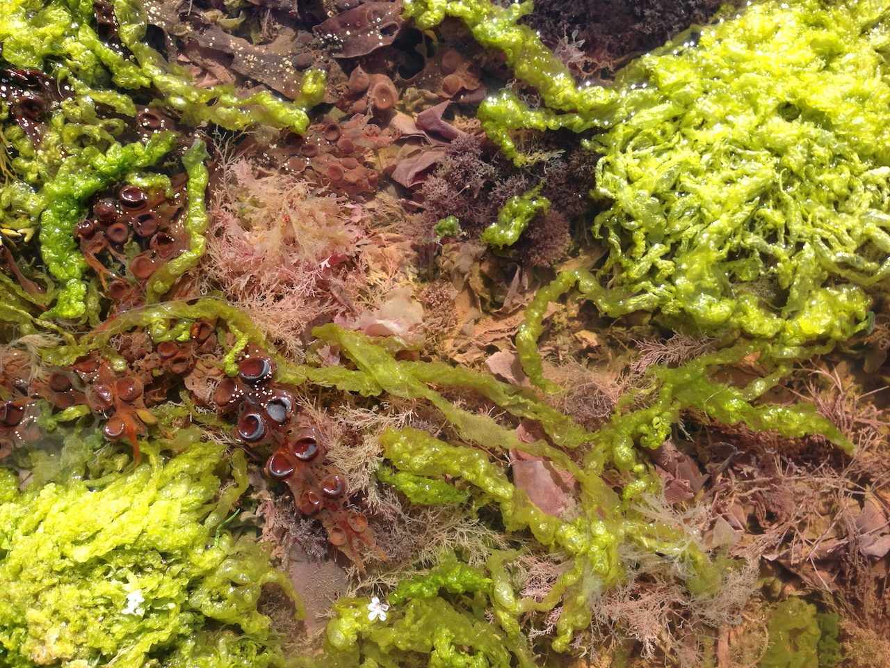

Sùil an Cruthaidheach is a collaborative project by Fiona MacIsaac and Neil Davidson combining arts outreach
activities with digital skills.We will run drop in sessions in various locations that are about learning how
to run projects, organise creative processes and share skills. This is a tailor made access point for young<
people to develop confidence and skills through creativity and digital technologies.
Skills on offer:
Drawing, video art, set design, film making, sound design, photography, digital photography, darkroom practice,
collage, composition, improvisation, collaborative practice, music production, electronic music, audio recording
techniques, project management, web design, coding, game design, print making, photoshop, video editing, web
editing, creative writing, drawing, painting, graphic design, sculpture, performance art and theatre.
If you want to work with us contact:
neil@taigh-chearsabhagh.org or fiona@taigh-chearsabhagh.org
